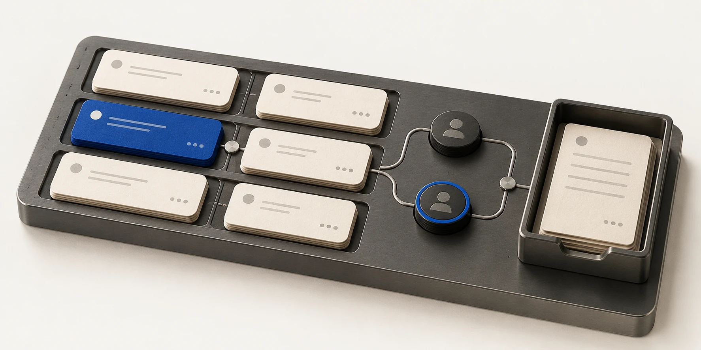

01Подробнее
Telegram-бот · Автоматизация
Заказы без потерянных сообщений
Бот, который связывает заказ, исполнителя и результат.
Выбранные работы / 01—03
Три собственных проекта — от бота до рабочего пространства.
Выберите проект, чтобы посмотреть задачу и решение.